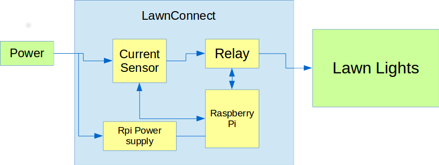
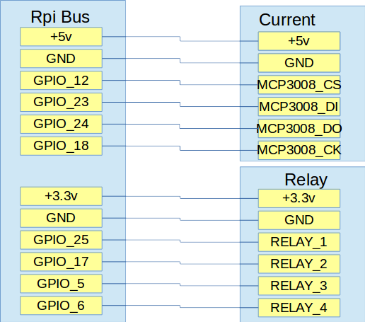
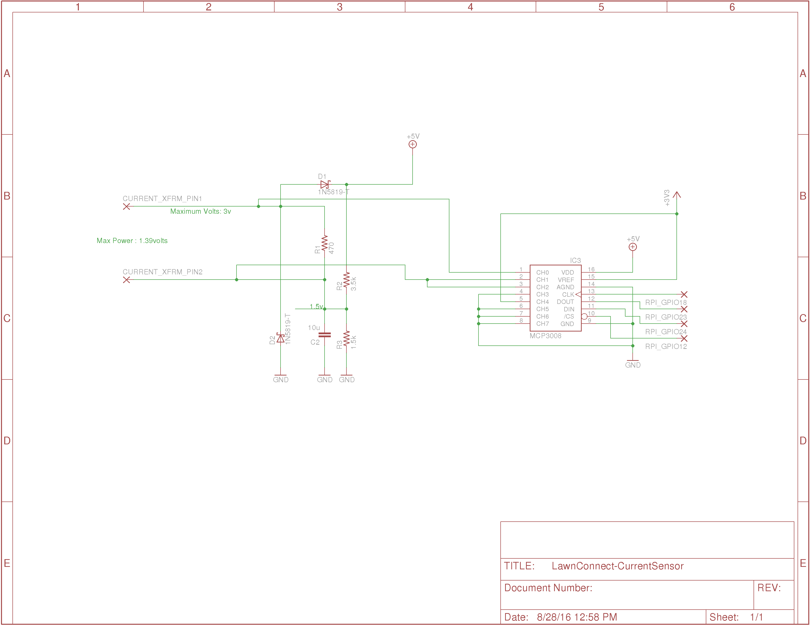

LawnConnect
A simple Raspberry Pi powered lawn light controller
Never have dark outside lighting again!!!
LawnConnect automatically controls and monitors your lawn lights and lets you know when something is wrong
Features:
- Automatically Turns on Lights at Sunset
- Turns off lights a random time 6-9 hours later
- A Web Interface for monitoring and manual turning on and off lights
- Detects when a Light has burnt out
- Sends text messages when a light is out.
- Accounts for daylight savings time
Description:
Have you ever went outside and noticed all your lawn lights were burnt out? This happened to me a little while ago. So I decided there had to be a better way and a perfect project for the Raspberry Pi. This Raspberry Pi project is a simple solution that will ensure you have complete control of your lights, even when you aren't around. Try this simple but powerful internet of things project using the Raspberry pi.
The Rasberry pi will control all the turn on and off of lights and will continually monitor the system power to determine if a light is not working. On the event a light is not working or burnt out, a text message will be sent to the phone number of your choice telling you of the problem.
Through a web application, you can remotely monitor the status and control the turn on and off of the system. Otherwise, the Raspberry pi will turn on your lights exactly at sunset each night and will turn them off a random time between 6 and 9 hours later.
Web Application:
The web application, hosted by the Raspberry Pi, gives a status of the system. The Lights On button is used to turn on and off the lights. Text box messages tell when the lights will be turned on and off next. There is a current monitor that shows the current being used by the lawn lights. A calibrate button (not implemented yet) will be used to calibrate the system at any time. Right now the system will be calibrated when it first turns on.

Block Diagram

Current Senor Board
The current sensor board will monitor the AC primary of the Lawn Light system. A current transformer monitors the signal and converts the signal into a low voltage AC wave that the MCP3008 10Bit ADC can read. The ADC reads the AC signal many times to find the peak value. This peak value represents the power in the system.
Relay Board
The HOT Wire of the Lawn Lights is controled by a high current and voltage relay. the Raspberry Pi can drive the relay directly using the low current relay windings.
RPi Power Supply
A 2 Amp power supply is recommended. This power supply is always on and provides power to the Rasberry Pi and all the other LawnConnect Control circuitry.
Raspberry Pi
A model B+ is used. This Raspberry Pi needs to be setup with Raspbian distribution and to auto connect to the wifi system.
Wiring Diagram:
This is how the Raspberry Pi is connected to the sensor board schematic and the relay board 
BOM:
The major components for the project are listed below

Sensor Board Schematic
The current sensor board is used to take the secondary of the current sensor and using a MCP3008 10bit ADC, convert into a digital signal that can be sampled by the Raspberry Pi 
Software
The software uses a python program to monitor the current through a SPI interface and the relays through simple GPIO pins. The simple python web server, (i.e. python -m CGIHTTPServer 8010) is used to service web requests. The client webpage uses javascript to monitor user inputs and output data from the monitor program. Communication between the web server and the main program is performed by datafiles.
The setup is straighforward. You need to setup the Rasbperry Pi to automatically connect to your wifi system. Then you also need to be able to access the Raspberry pi as a headless system. There are plenty of guides available on the internet. The key is that you can log into the system via ssh pi@xxx.xxx.1.xxx where xxx.xxx.1.xxx is the IP address of your Raspberry Pi.
Download the github software into the /home/pi directory.
git clone https://github.com/drkmsmithjr/LConnect.git
Edit and setup the crontab to automatically start the boot.sh script.
crontab -e
edit this file with the following command
@reboot /home/pi/LConnect/boot.sh
Reboot the system to get things started.
sudo reboot
Open a browser and find the IP address of the Raspberry Pi to access the webpage. You need the :8010 port extension to access the browser
RPIADDRESS:8010/LawnConnectIndex.html
Setting up the Correct GPS Location
You will need to put your Longitude and Latitude into the LawnConnect.py code by setting the o.lat and o.long parameters
o.lat = '33.4672'
o.long = '-117.6981'
Twillo Account Setup
The LawnConnect will sent an SMS message to your cell phone using Twillo Account. You will need to get a Free Twillo Account at https://www.twilio.com. After getting an account, get the twillo Phone Number, Account Number, and Token and place them into the twilloaccount.py file. this file is not in the Git download but can easily be generated as follows:
#!/usr/bin/python
# where to put the twillo account information
Taccount= 'twillo_account'
Ttoken ='twillo_token'
Tnumber = 'twillo number'
To_number = 'Number to Call'
save this twilloaccount.py file into the /home/pi/LConnect directory
You are all set. Good Luck and let me know if you have any questions.
The webpage for the project is located at https://drkmsmithjr.github.io/LConnect